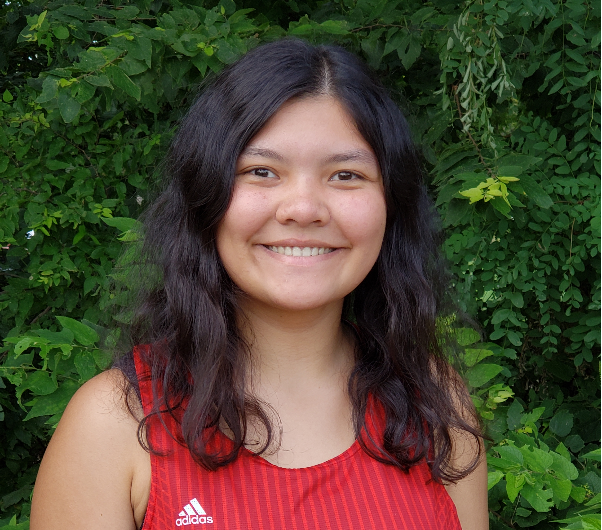

Rising sophomore at AUCA
Co-founder | summer 2020 - present
I was a co-founder of "The Guards",
a platform that provides legal services for vulnerable populations and internships to law major students.
I built a network and won a $4,000 in funding from the UNODC.
Founder | 2019 - present
BinTech is focused on the first step of recycling - sorting of trash.
It is a producer of an automatic trash-sorting machine, or in other words - automatic recycler,
with a major purpose to increase the quantity and quality of recycled material, and eventually reduce the land pollution.
With the distribution of BinTech around the world, we aim to increase the current 5% of trash recycling across the planet by ten times.